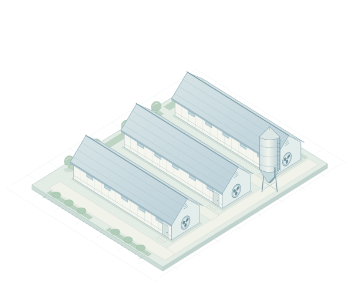

- کارفرما
- نوع واحد
- شماره پروانه تأسیس
- ظرفیت واحد
- مساحت زمین
- مترمربع
- زیربنای کل
- مترمربع
- دستگاه نظارت
- تاریخ شروع پروژه
- مدت اجرا
AGRICULTURAL PROJECTدر حال احداث
احداث واحد مرغداری گوشتیمرغداری فخرالدین کشیری
مشخصات واحد، اطلاعات ناظر ساخت و مسیر نظارت بر احداث؛ همه در یک شناسنامه، همیشه در دسترس.
شناسه پروژهپرونده نمونه

نظارت ساخت در ۴ مرحله
SCHEMATIC / 01
ظرفیت واحد
فضاهای اصلی واحد
مساحت زمین
مترمربع
زیربنای کل
مترمربع
01
اطلاعات نمایشیتابلو مشخصات پروژه
اطلاعات تأسیس و احداث واحد
02
مهندسی کشاورزیناظر ساخت پروژه
یک ناظر، همراه پروژه در هر چهار مرحله ساخت
پروانه نمونه
پرونده ساخت، مرحله به مرحله
ناظر ساخت در هر مرحله بازدید، مشاهدات و نتیجه کنترلها را ثبت میکند. متن گزارشها و مدارک از پنل کنترل نظارت در دسترساند.
03
موقعیت واحد
آدرس و دسترسی به محل پروژه
04
بدون نیاز به ورودگزارشات مردمی
ثبت گزارش تخلف یا گزارش تشویقی درباره این واحد
مشاهدهتان را ثبت کنید
متن گزارش را بنویسید و در صورت نیاز عکس اضافه کنید.
نسخه نمایشی؛ ثبت فقط در همین مرورگر انجام میشود.گزارشهای ثبتشده در این مرورگر
ورود واحد کنترل نظارت
ثبت گزارش چهار مرحله ساخت، مشاهده مدارک و نامههای پروژه